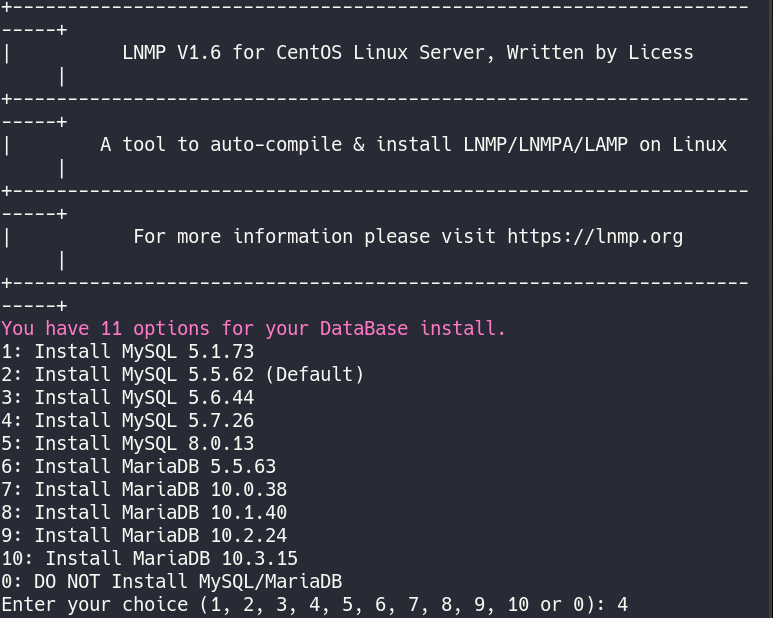
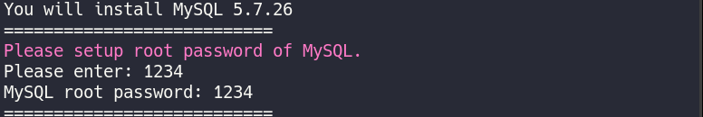
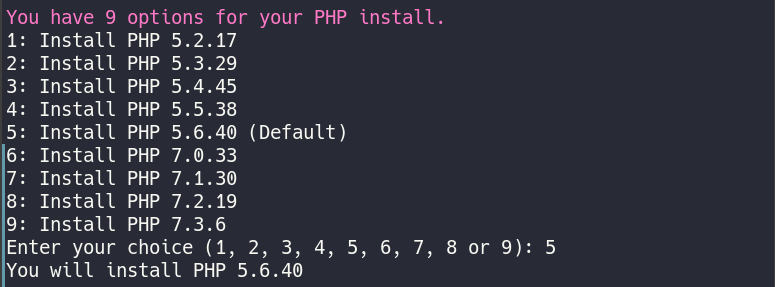
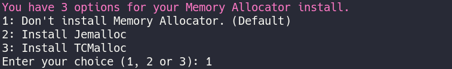
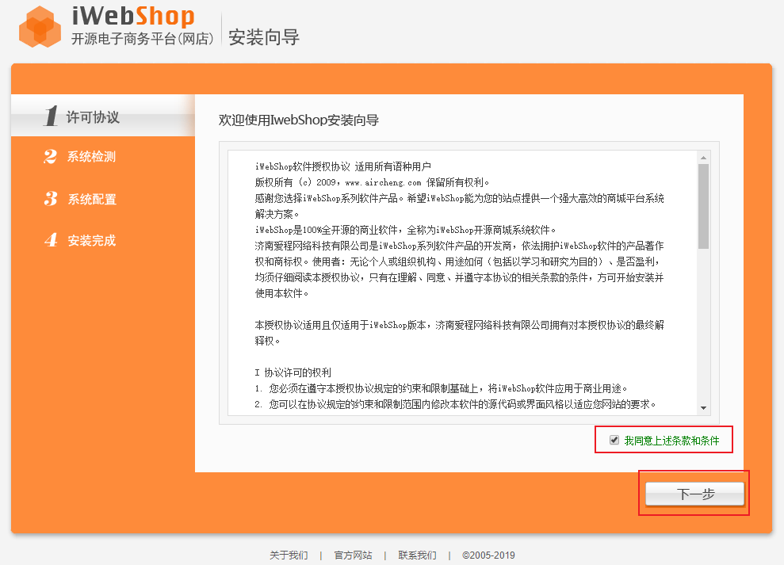
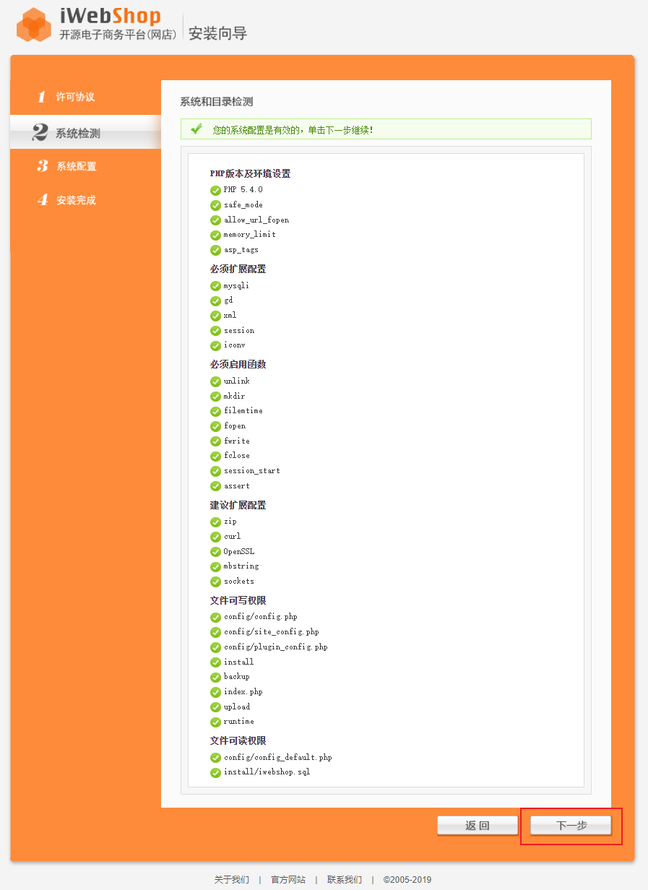
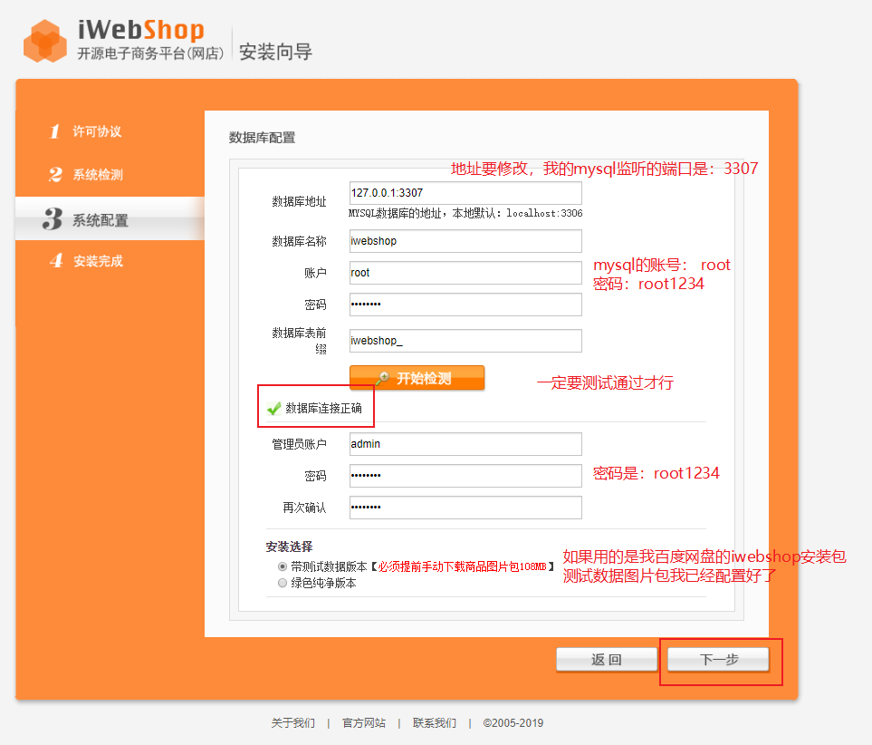
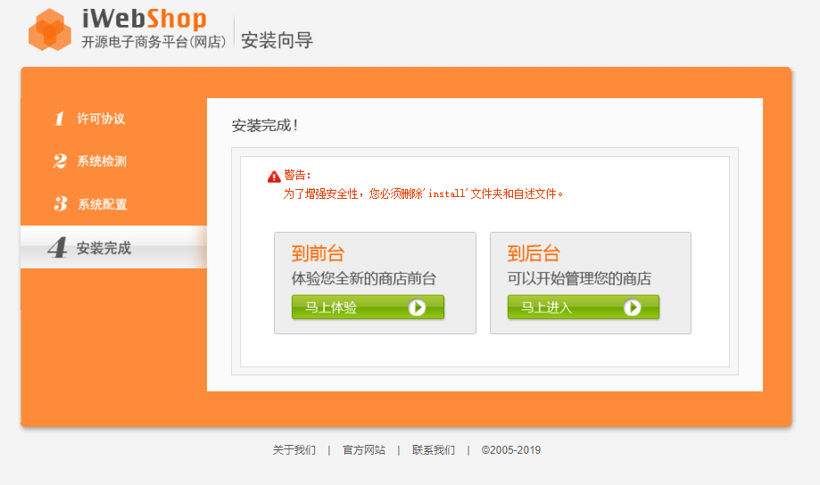
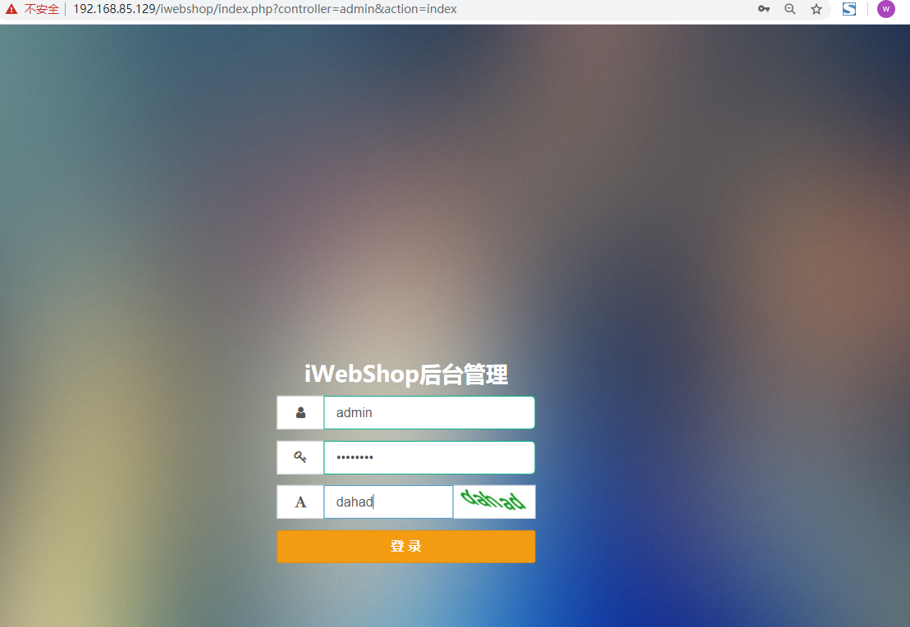

目录
about
摘自iWebShop官网：
iWebShop是一款基于PHP语言及MYSQL数据库开发的B2B2C单用户和多用户开源商城系统，系统支持平台自营和多商家入驻、集成微信商城、手机商城、移动端APP商城、三级分销、微信小程序等于一体，它可以承载大数据量且性能优良，还可以跨平台，界面美观功能丰富是电商建站首选源码。
最低环境版本：PHP5.5以上 + MYSQL(MariaDB)5.4以上 + Apache2.2以上 或 Nginx1.4以上。
由上面的环境说明就知道，这个鬼东西安装不简单(其实挺简单的)！
但是为了省事儿，我们这里使用LNMP一键安装包来一键安装iWebShop项目。
LNMP是什么？LNMP一键安装包是一个用Linux Shell编写的可以为CentOS/RHEL/Fedora/Aliyun/Amazon、Debian/Ubuntu/Raspbian/Deepin/Mint Linux VPS或独立主机安装LNMP(Nginx/MySQL/PHP)、LNMPA(Nginx/MySQL/PHP/Apache)、LAMP(Apache/MySQL/PHP)生产环境的Shell程序。
接下来演示在centos环境如何搭建iwebshop项目。
iwebshop5.6百度云盘：链接：https://pan.baidu.com/s/1_linjSP_tqKlb7n8hWkFYA 提取码：
4dug
you can also go to http://www.aircheng.com/down download source code
配置数据库
centos安装docker：https://www.cnblogs.com/Neeo/articles/11945963.html
提前配置好MySQL数据库，这里以MySQL5.7.26版本为例。
1 | [root@C /]# mkdir -p /docker_data/mysql_data/data /docker_data/mysql_data/logs /docker_data/mysql_data/conf |
上述配置，是创建一个MySQL容器，容器中的mysql账号密码:
1 |
|
在容器环境要提前创建一个iwebshop数据库。后续会用到。
Centos配置LNMP环境并配置iwebshop项目
这里以/home目录展开…..
- 下载lnmp集成安装包，并选择数据库版本，这里以mysql5.7为例，输入对应版本之前的序号即可:
1 | [root@CS2 /] |

- 输入数据库root账户的密码
1234:

- 询问是否需要启⽤MySQL InnoDB，InnoDB引擎默认为开启，⼀般建议开启，直接回⻋或输⼊ y ，如果确定确实不需要该引擎可以输⼊ n，(MySQL 5.7+版本⽆法关闭InnoDB),输⼊完成，回⻋进⼊下⼀步：
- 选择PHP版本，这里我选择默认。

- 内存分配器选项，默认不安装内存分配器。

- 按任意键进行安装。
然后就是漫长的等待了…..请保持你的网络连接！
完事之后，LNMP环境算是搭建完毕，默认监听80端口，你可以访问你的服务器
ip:80来访问：现在，你可以将iwebshop解压后的目录拷贝到
/home/wwwroot/default，如下所示：
1 | [root@CS2 default] |
- 再给iwebshop目录一个777权限：
1 | [root@CS2 default]# chmod 777 -R /home/wwwroot/default/iwebshop/ |
- 现在可以访问
ip:80/iwebshop地址，然后会自动的跳转到安装目录了，勾选许可点击下一步：
 - 可以看到各个配置都是没有问题的，直接点击下一步：
 - 参照下图配置相关数据参数和管理员密码，并牢记密码

可能会遇到安装失败的情况，在这个页面就多尝试几次，只要你的数据库配置的没有问题。
- 安装完成，可以选择到前台和到后台进入网站了。

- 可以使用admin账号(密码是：root1234)登录到后台：

后续的配置可以根据你的情况来配置了。
使用LNMP
1 | Usage: lnmp {start|stop|reload|restart|kill|status} |
欢迎斧正,that’s all, see also:
作者： 听雨危楼
出处：https://www.cnblogs.com/Neeo/articles/12728236.html
版权：本作品采用「署名-非商业性使用-相同方式共享 4.0 国际」许可协议进行许可。